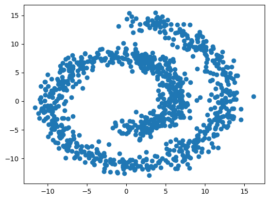
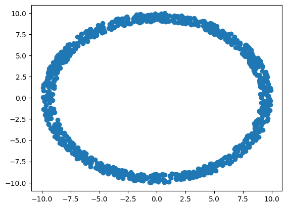
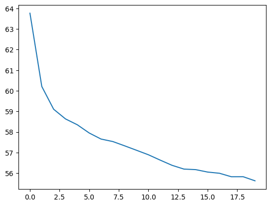
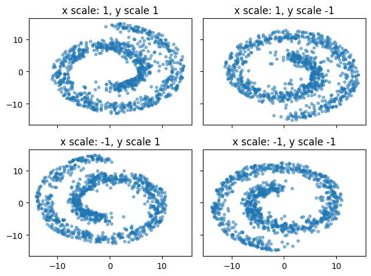

import os
os.environ["KERAS_BACKEND"] = "tensorflow"
import tensorflow as tf
import keras
import numpy as np
import matplotlib.pyplot as plt
from sklearn.datasets import make_swiss_roll
from math import piFlow matching with conditioning
In the previous exercises, we trained a normalizing flow and a flow matching models to reproduce one distribution.
In this example, we will expand the concept a little bit and show that a single generative model can be trained to generate different distributions, by conditioning on additional variables.
The data
We will use the swiss roll data distribution available from the sklearn library. This distribution generates samples in 3D, but we will only focus on a 2D projection, since the third dimension is not very interesting.
n_samples=1_000data, _ = make_swiss_roll(n_samples, noise=1)
data = data[:,[0, -1]]
fig=plt.scatter(data[:,0], data[:,1])
To show that generative models like flow matching can use other base distributions than the normal, we will also create a custom base distribution that samples values along a circle (a ring).
def make_ring(n_samples):
u = np.random.uniform(low=0, high=2*pi, size=(n_samples,1))
r = np.random.uniform(low=9, high=10, size=(n_samples,1))
x = r * np.sin(u)
y = r * np.cos(u)
return np.concatenate([x, y], axis=-1)
base = make_ring(n_samples)
fig=plt.scatter(base[:,0], base[:,1])
The model
The model is the same as in the datasaurus flow matching exercise except that the velocity network also accepts additional variables that we here call condition. This allows us to train the network to generate different distributions, depending on the values of condition that we choose.
class FlowMatching(keras.Model):
def __init__(self, n_units, n_layers, dim=2):
""" Initiate the flow matching model object
Parameters
----------
n_units: int
Number of units per each layer of the velocity MLP
n_layers: int
Number of layers of the velocity MLP
dim: int
Number of output dimensions (by default 2 because the datasaurus lives in 2D)
"""
super(FlowMatching, self).__init__()
self.dim = dim
self.velocity = keras.Sequential(
[keras.layers.Dense(n_units, activation="elu") for _ in range(n_layers)]
)
self.velocity.add(keras.layers.Dense(dim))
def call(self, inputs):
""" Call the velocity vector
Parameters
----------
inputs: dict
x_0: samples from the base distribution
x_1: samples from the data distribution
t: samples of the time variable between [0, 1]
condition: some conditioning variables
Returns the velocity vector
"""
x_0, x_1, t, condition = inputs.values()
x_t = (1-t)*x_0 + t*x_1
x = keras.ops.concatenate([x_t, t, condition], axis=-1)
return self.velocity(x)
def step(self, x, t, dt, condition):
""" Make one step using the midpoint ODE solver
Parameters
----------
x: tensor/array (batch_size, dim)
Samples of the variable x_t
t: tuple/array (batch_size,)
Samples of the time variable between [0, 1]
dt: float
The size of the time step
condition: some conditioning variables
Returns: tensor/array (batch_size, dim)
Samples of the variable x_{t+dt}
"""
t_start = np.zeros_like(x) + t
input_start = keras.ops.concatenate([x, t_start, condition], axis=-1)
v = self.velocity(input_start)
x_mid = x + v * dt / 2
t_mid = t_start + dt / 2
input_mid = keras.ops.concatenate([x_mid, t_mid, condition], axis=-1)
v = self.velocity(input_mid)
x_end = x + v * dt
return x_end
def run(self, x, steps, condition):
""" Run the ODE solver from t=0 to t=1
Parameters
----------
x: tensor/array (batch_size, dim)
Samples from the base distribution, x_0
steps: int
Number of steps to make between t=0 and t=1
condition: some conditioning variables
Returns: tensor/array (batch_size, dim)
Samples x_1 ~ p_1
"""
time = np.linspace(0, 1, steps+1)
output = []
output.append(x)
for i in range(steps):
x = self.step(x, time[i], time[i+1]-time[i], condition)
output.append(x)
return output
def sample(self, n_samples, steps, condition):
""" Sample from the learned distribution
Parameters
----------
n_samples: int
Number of samples to take
steps: int
Number of steps to make between t=0 and t=1 in the ODE
condition: some conditioning variables
Returns (array (batch_size, steps+1, dim)
Samples of x_t ~ p_t
"""
condition = np.array(condition)[np.newaxis,...]
condition = np.repeat(condition, repeats=n_samples, axis=0)
x_0 = make_ring(n_samples)
x_1 = self.run(x_0, steps, condition)
return np.array(x_1).swapaxes(0, 1)Once we defined our model class, we can instantiate a new flow matching model object.
flow = FlowMatching(n_units=64, n_layers=8)Training
Similarly as in the datasaurus exercise, we will use a dataset object to do our sampling. Here, we will always generate a fresh batch of new data - from the swiss roll distribution, and from the ring distribution.
We will also make a twist: We will randomly sample values of 1 or -1 for the x and y coordinate, which we use to scale the swiss roll data. This will produce 4 different variations of the swiss roll data, reflected along and \(x\) or \(y\) axis. The values of this scale will be passed to the velocity network as condition.
Otherwise, the rest is the same as with the datasaurus.
class DataSet(keras.utils.PyDataset):
def __init__(self, batch_size, n_batches):
super().__init__()
self.n_batches=n_batches
self.batch_size = batch_size
@property
def num_batches(self):
return self.n_batches
def __getitem__(self, index):
data, _ = make_swiss_roll(self.batch_size, noise=1)
data = data[:,[0, -1]]
condition = np.random.choice([1, -1], size=(batch_size, 2))
data = condition * data
base= make_ring(data.shape[0])
t = np.random.uniform(low=0, high=1, size=data.shape[0])
t = np.repeat(t[:,np.newaxis], repeats=data.shape[1], axis=1)
target = data - base
return dict(x_0=base, x_1=data, t=t, condition=condition), targetNext, we instantiate the dataset object, and define our schedule and optimizer, and compile the model.
epochs=20
batches=1000
batch_size=512
dataset=DataSet(batch_size=batch_size, n_batches=epochs*batches)
schedule = keras.optimizers.schedules.CosineDecay(initial_learning_rate=0.01, decay_steps=epochs*batches)
optimizer = keras.optimizers.Adam(schedule, global_clipnorm=1.0)
flow.compile(
optimizer=optimizer,
loss=keras.losses.MeanSquaredError()
)Again, the same as with the datasaurus exercise, we can call the .fit method to train the model.
history=flow.fit(x=dataset, epochs=epochs, steps_per_epoch=batches)Epoch 1/20
1000/1000 ━━━━━━━━━━━━━━━━━━━━ 5s 4ms/step - loss: 67.5142
Epoch 2/20
1000/1000 ━━━━━━━━━━━━━━━━━━━━ 4s 4ms/step - loss: 60.5823
Epoch 3/20
1000/1000 ━━━━━━━━━━━━━━━━━━━━ 4s 4ms/step - loss: 59.2506
Epoch 4/20
1000/1000 ━━━━━━━━━━━━━━━━━━━━ 4s 4ms/step - loss: 58.8516
Epoch 5/20
1000/1000 ━━━━━━━━━━━━━━━━━━━━ 4s 4ms/step - loss: 58.4735
Epoch 6/20
1000/1000 ━━━━━━━━━━━━━━━━━━━━ 4s 4ms/step - loss: 58.0877
Epoch 7/20
1000/1000 ━━━━━━━━━━━━━━━━━━━━ 4s 4ms/step - loss: 57.6959
Epoch 8/20
1000/1000 ━━━━━━━━━━━━━━━━━━━━ 3s 3ms/step - loss: 57.6651
Epoch 9/20
1000/1000 ━━━━━━━━━━━━━━━━━━━━ 4s 4ms/step - loss: 57.3689
Epoch 10/20
1000/1000 ━━━━━━━━━━━━━━━━━━━━ 4s 4ms/step - loss: 57.1357
Epoch 11/20
1000/1000 ━━━━━━━━━━━━━━━━━━━━ 4s 4ms/step - loss: 56.9357
Epoch 12/20
1000/1000 ━━━━━━━━━━━━━━━━━━━━ 4s 4ms/step - loss: 56.5468
Epoch 13/20
1000/1000 ━━━━━━━━━━━━━━━━━━━━ 4s 4ms/step - loss: 56.4292
Epoch 14/20
1000/1000 ━━━━━━━━━━━━━━━━━━━━ 3s 3ms/step - loss: 56.2061
Epoch 15/20
1000/1000 ━━━━━━━━━━━━━━━━━━━━ 4s 4ms/step - loss: 56.1961
Epoch 16/20
1000/1000 ━━━━━━━━━━━━━━━━━━━━ 4s 4ms/step - loss: 56.1195
Epoch 17/20
1000/1000 ━━━━━━━━━━━━━━━━━━━━ 4s 4ms/step - loss: 56.1653
Epoch 18/20
1000/1000 ━━━━━━━━━━━━━━━━━━━━ 4s 4ms/step - loss: 55.8236
Epoch 19/20
1000/1000 ━━━━━━━━━━━━━━━━━━━━ 4s 4ms/step - loss: 55.8725
Epoch 20/20
1000/1000 ━━━━━━━━━━━━━━━━━━━━ 4s 4ms/step - loss: 55.6168f=plt.plot(history.history["loss"])
Now that we fitted the model, let’s see the samples it generates!
Here we will loop over the possible combinations of the condition which is either -1 or 1 for \(x\) and \(y\) coordinate - leading to 4 different distributions produced by the flow matching model.
fig, axs = plt.subplots(2, 2, sharex=True, sharey=True)
for i, x_scale in enumerate([1, -1]):
for j, y_scale in enumerate([1, -1]):
condition = [x_scale, y_scale]
x = flow.sample(n_samples=n_samples, steps=100, condition=condition)
axs[i,j].scatter(x[:, -1, 0], x[:, -1, 1], s=10, alpha=0.5)
axs[i,j].set_title("x scale: {}, y scale {}".format(x_scale, y_scale))
fig.tight_layout()